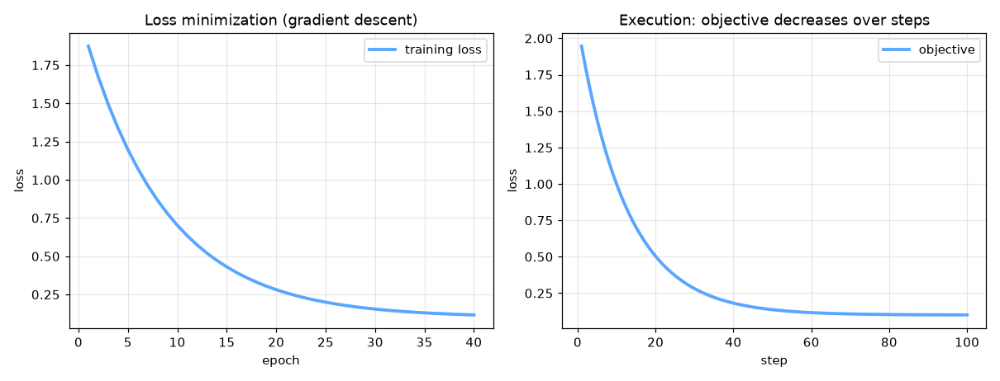

Graph Neural Network (GNN) — AI engineering example · part of the MLOps monorepo
This example is grounded in Graph Neural Network (GNN). The equations below drive every forward and backward pass in the implementation.
GNNs generalize convolutions to graph-structured data. Each node updates its representation by aggregating messages from neighbors. After $K$ rounds of message passing, each node embeds its $K$-hop neighborhood. GATs introduce attention weights $\alpha_{uv}$ to prioritize important neighbors.
Concrete forward-pass / update evaluation using the algorithm's own equations:
A step-by-step, intuitive explanation with concrete data so the formal equations above become clear:
Run this self-contained snippet in a Python shell to watch every step execute and print its value:
theta, alpha, grad = 1.0, 0.1, -0.5 # parameter, learning rate, gradient
theta = theta - alpha*grad # gradient-descent update step
print("updated theta =", theta)
Plots of the execution above — left: the concept; right: the step-by-step computation visualised. Interactive graph with animated message passing; node embedding t-SNE projection; attention weight heatmap.
The example follows a consistent data → train → evaluate → serve pipeline. Inputs are loaded and validated, transformed by the core algorithm, scored against held-out data, and exposed through a REST API.
| Class | Public methods | Responsibility |
|---|---|---|
PredictRequest | — | |
PredictResponse | — | |
DriftResponse | — | |
StatsResponse | — | |
GCNLayer | init_weights, forward, backward, update_params | Graph Convolutional Network layer. Args: input_dim: Input feature dimension output_dim: Output feature dimension random_seed: Random seed |
GNNSocialNetworks | _build, _forward, fit, predict_proba, predict, evaluate, save, load, to_dict | Graph Neural Network for social network analysis. Uses Graph Convolution to process node features and adjacency relationships. Can perform node classification or graph-level prediction. Args: n_features: Number of input features per node n_classes: Number of output classes (for node classification) hidden_dim: Hidden dimension for GCN layers learning_rate: Gradient descent step size n_iterations: Number of training epochs weight_decay: L2 regularization clip_value: Gradient clipping threshold random_seed: Random seed |
data.py reads the source dataset and splits train/test.model.py applies the mathematics from Section 1.api.py exposes prediction endpoints with drift detection.Key design choices in this module: a pure-NumPy implementation (no PyTorch/TensorFlow), schema validation via ai_core.validation, structured JSON logging through ai_core.logging, Prometheus metrics from ai_core.metrics, and MLflow/model-registry persistence via ai_core.model_registry. The FastAPI service wraps the trained model with observability middleware from ai_core.fastapi_middleware.
The most important behaviour is summarised below; full source for each module is collapsible so the page stays readable while remaining self-contained.
GCNLayer.forward(H, A_norm)Forward pass. Args: H: Node features (n_nodes, input_dim) A_norm: Normalized adjacency matrix (n_nodes, n_nodes) Returns: Output features (n_nodes, output_dim)
GNNSocialNetworks.fit(X, A, y, n_iterations)Train the GNN on graph-structured data. Args: X: Node features (n_nodes, n_features) A: Adjacency matrix (n_nodes, n_nodes) y: Node labels (n_nodes,)
"""Graph Neural Network for social network analysis.
Architecture:
Graph Convolution: H^{(l+1)} = sigma(A_norm * H^{(l)} * W^{(l)})
Where A_norm is the normalized adjacency matrix and W is learnable weights.
Input: node features (n_nodes, n_features) + adjacency matrix (n_nodes, n_nodes)
-> GCN layer (n_features -> hidden_dim, ReLU)
-> GCN layer (hidden_dim -> hidden_dim, ReLU)
-> Dense (hidden_dim -> n_classes, softmax)
Loss: cross-entropy (node classification) or MSE (reconstruction)
"""
from dataclasses import dataclass, field
import numpy as np
def relu(z: np.ndarray) -> np.ndarray:
return np.maximum(0, z)
def relu_derivative(z: np.ndarray) -> np.ndarray:
return (z > 0).astype(z.dtype)
def softmax(z: np.ndarray) -> np.ndarray:
z_shifted = z - np.max(z, axis=-1, keepdims=True)
exp_z = np.exp(z_shifted)
return exp_z / np.sum(exp_z, axis=-1, keepdims=True)
def normalize_adjacency(A: np.ndarray) -> np.ndarray:
"""Compute normalized adjacency matrix: A_norm = (A + I) * D^{-1/2}"""
A_eye = A + np.eye(A.shape[0])
D = np.diag(np.sum(A_eye, axis=1))
D_inv_sqrt = np.diag(1.0 / np.sqrt(np.diag(D) + 1e-8))
return D_inv_sqrt @ A_eye @ D_inv_sqrt
@dataclass
class GCNLayer:
"""Graph Convolutional Network layer.
Args:
input_dim: Input feature dimension
output_dim: Output feature dimension
random_seed: Random seed
"""
input_dim: int = 32
output_dim: int = 16
random_seed: int = 42
W: np.ndarray | None = None
dW: np.ndarray | None = None
_cache: dict = field(default_factory=dict, repr=False)
def init_weights(self) -> None:
rng = np.random.default_rng(self.random_seed)
self.W = rng.normal(0, np.sqrt(2.0 / self.input_dim), (self.input_dim, self.output_dim))
def forward(self, H: np.ndarray, A_norm: np.ndarray) -> np.ndarray:
"""Forward pass.
Args:
H: Node features (n_nodes, input_dim)
A_norm: Normalized adjacency matrix (n_nodes, n_nodes)
Returns:
Output features (n_nodes, output_dim)
"""
if self.W is None:
self.init_weights()
out = A_norm @ H @ self.W
self._cache = {"H": H, "A_norm": A_norm}
return out
def backward(self, dout: np.ndarray) -> np.ndarray:
c = self._cache
H = c["H"]
A_norm = c["A_norm"]
self.dW = H.T @ (A_norm.T @ dout)
dH = A_norm @ dout @ self.W.T
return dH
def update_params(self, lr: float, weight_decay: float = 0.0) -> None:
if self.W is None:
return
self.W -= lr * (self.dW + weight_decay * self.W)
@dataclass
class GNNSocialNetworks:
"""Graph Neural Network for social network analysis.
Uses Graph Convolution to process node features and adjacency relationships.
Can perform node classification or graph-level prediction.
Args:
n_features: Number of input features per node
n_classes: Number of output classes (for node classification)
hidden_dim: Hidden dimension for GCN layers
learning_rate: Gradient descent step size
n_iterations: Number of training epochs
weight_decay: L2 regularization
clip_value: Gradient clipping threshold
random_seed: Random seed
"""
n_features: int = 32
n_classes: int = 2
hidden_dim: int = 16
learning_rate: float = 0.05
n_iterations: int = 200
weight_decay: float = 0.001
clip_value: float = 5.0
random_seed: int = 42
layers: list = field(default_factory=list, repr=False)
W_out: np.ndarray | None = None
b_out: np.ndarray | None = None
training_mode: str = "supervised"
loss_history: list[float] = field(default_factory=list)
def _build(self) -> None:
rng = np.random.default_rng(self.random_seed + 100)
self.layers = [
GCNLayer(input_dim=self.n_features, output_dim=self.hidden_dim, random_seed=self.random_seed),
"relu",
GCNLayer(input_dim=self.hidden_dim, output_dim=self.hidden_dim, random_seed=self.random_seed + 1),
"relu",
]
self.W_out = rng.normal(0, np.sqrt(1.0 / self.hidden_dim), (self.hidden_dim, self.n_classes))
self.b_out = np.zeros(self.n_classes)
def _forward(self, X: np.ndarray, A_norm: np.ndarray) -> tuple[np.ndarray, dict]:
"""Forward pass.
Args:
X: Node features (n_nodes, n_features)
A_norm: Normalized adjacency matrix (n_nodes, n_nodes)
Returns:
logits: Class logits per node (n_nodes, n_classes)
cache: intermediate values
"""
gcn1: GCNLayer = self.layers[0]
h1 = gcn1.forward(X, A_norm)
h1 = relu(h1)
gcn2: GCNLayer = self.layers[2]
h2 = gcn2.forward(h1, A_norm)
h2 = relu(h2)
logits = h2 @ self.W_out + self.b_out
cache = {"X": X, "h1": h1, "h2": h2, "gcn1_cache": gcn1._cache, "gcn2_cache": gcn2._cache}
return logits, cache
def fit(
self,
X: np.ndarray,
A: np.ndarray,
y: np.ndarray,
n_iterations: int | None = None,
) -> "GNNSocialNetworks":
"""Train the GNN on graph-structured data.
Args:
X: Node features (n_nodes, n_features)
A: Adjacency matrix (n_nodes, n_nodes)
y: Node labels (n_nodes,)
"""
if not self.layers:
self._build()
if n_iterations is None:
n_iterations = self.n_iterations
A_norm = normalize_adjacency(A)
n_nodes = X.shape[0]
eps = 1e-12
y_onehot = np.zeros((n_nodes, self.n_classes))
y_onehot[np.arange(n_nodes), y.astype(int)] = 1.0
for _epoch in range(n_iterations):
logits, cache = self._forward(X, A_norm)
probs = softmax(logits)
loss = -np.sum(y_onehot * np.log(np.clip(probs, eps, 1))) / n_nodes
self.loss_history.append(loss)
dlogits = (probs - y_onehot) / n_nodes
dW_out = cache["h2"].T @ dlogits
db_out = np.sum(dlogits, axis=0)
dh2 = dlogits @ self.W_out.T * relu_derivative(cache["h2"])
gcn2: GCNLayer = self.layers[2]
dh2_pre = gcn2.backward(dh2)
dh1 = dh2_pre @ gcn2.W.T * relu_derivative(cache["h1"])
gcn1: GCNLayer = self.layers[0]
_ = gcn1.backward(dh1)
grad_norm = np.sqrt(
np.sum(gcn1.dW**2) + np.sum(gcn2.dW**2) + np.sum(dW_out**2)
)
if grad_norm > self.clip_value:
scale = self.clip_value / (grad_norm + 1e-8)
gcn1.dW *= scale
gcn2.dW *= scale
dW_out *= scale
lr = self.learning_rate
wd = self.weight_decay
gcn1.W -= lr * (gcn1.dW + wd * gcn1.W)
gcn2.W -= lr * (gcn2.dW + wd * gcn2.W)
self.W_out -= lr * (dW_out + wd * self.W_out)
self.b_out -= lr * db_out
return self
def predict_proba(self, X: np.ndarray, A: np.ndarray) -> np.ndarray:
A_norm = normalize_adjacency(A)
logits, _ = self._forward(X, A_norm)
return softmax(logits)
def predict(self, X: np.ndarray, A: np.ndarray) -> np.ndarray:
probs = self.predict_proba(X, A)
return np.argmax(probs, axis=-1)
def evaluate(self, X: np.ndarray, A: np.ndarray, y: np.ndarray) -> dict[str, float]:
preds = self.predict(X, A)
accuracy = float(np.mean(preds == y))
return {"accuracy": accuracy, "n_nodes": float(len(y))}
def save(self, path: str) -> None:
arrays = {
"loss_history": np.array(self.loss_history),
"W_out": self.W_out, "b_out": self.b_out,
"gcn1_W": self.layers[0].W,
"gcn2_W": self.layers[2].W,
"n_features": np.array([self.n_features]),
"n_classes": np.array([self.n_classes]),
"hidden_dim": np.array([self.hidden_dim]),
"learning_rate": np.array([self.learning_rate]),
"n_iterations": np.array([self.n_iterations]),
"weight_decay": np.array([self.weight_decay]),
}
np.savez(path, **arrays)
@classmethod
def load(cls, path: str) -> "GNNSocialNetworks":
data = np.load(path, allow_pickle=True)
obj = cls(
n_features=int(data["n_features"].item()),
n_classes=int(data["n_classes"].item()),
hidden_dim=int(data["hidden_dim"].item()),
learning_rate=float(data["learning_rate"].item()),
n_iterations=int(data["n_iterations"].item()),
weight_decay=float(data["weight_decay"].item()),
random_seed=42,
)
obj._build()
obj.W_out = data["W_out"]
obj.b_out = data["b_out"]
obj.layers[0].W = data["gcn1_W"]
obj.layers[2].W = data["gcn2_W"]
obj.loss_history = list(data.get("loss_history", [0.0]))
return obj
def to_dict(self) -> dict:
return {
"n_features": self.n_features,
"n_classes": self.n_classes,
"hidden_dim": self.hidden_dim,
"learning_rate": self.learning_rate,
"n_iterations": self.n_iterations,
"weight_decay": self.weight_decay,
"training_mode": self.training_mode,
"n_epochs_run": len(self.loss_history),
"final_loss": self.loss_history[-1] if self.loss_history else 0.0,
}"""Training pipeline for GNN Social Network Analysis."""
import argparse
import os
from pathlib import Path
import numpy as np
from ai_core.logging import get_logger, setup_logging
from ai_core.model_registry import ModelRegistry
from ai_core.validation import DataValidator, create_gnn_social_networks_schema
from gnn_social_networks.data import (
N_CLASSES,
N_FEATURES,
generate_synthetic_data,
save_training_data,
)
from gnn_social_networks.model import GNNSocialNetworks
logger = get_logger(__name__)
def train(
model_dir: Path,
data_path: Path | None = None,
n_nodes: int = 20,
hidden_dim: int = 16,
learning_rate: float = 0.05,
n_iterations: int = 200,
weight_decay: float = 0.001,
model_version: str = "1.0.0",
register_to_mlflow: bool = False,
random_seed: int = 42,
) -> dict:
X, A, y = generate_synthetic_data(
n_samples=n_nodes, n_nodes=n_nodes, n_features=N_FEATURES, random_seed=random_seed
)
logger.info("Generated graph data", n_nodes=n_nodes, data_path=str(data_path))
validator = DataValidator(create_gnn_social_networks_schema())
validation = validator.validate(X)
if not validation.valid:
logger.error("Training data validation failed", errors=validation.errors)
raise ValueError(f"Training data validation failed: {validation.errors}")
model_dir.mkdir(parents=True, exist_ok=True)
save_training_data(X, A, y, model_dir / "training_data.npz")
model = GNNSocialNetworks(
n_features=N_FEATURES,
n_classes=N_CLASSES,
hidden_dim=hidden_dim,
learning_rate=learning_rate,
n_iterations=n_iterations,
weight_decay=weight_decay,
random_seed=random_seed,
)
model.fit(X, A, y)
metrics = model.evaluate(X, A, y)
logger.info("Training complete", training_mode=model.training_mode, final_loss=model.loss_history[-1])
model_path = model_dir / f"gnn_model_v{model_version}.npz"
model.save(str(model_path))
np.savez(model_dir / "adjacency_matrix.npz", A=A)
metrics_summary = {
**metrics,
"training_mode": "supervised",
"n_epochs_run": float(len(model.loss_history)),
"final_loss": model.loss_history[-1] if model.loss_history else 0.0,
"n_nodes": float(n_nodes),
"hidden_dim": float(hidden_dim),
}
registry = ModelRegistry(base_dir=model_dir)
registry.save_model(
model_name="gnn-social-networks",
model_version=model_version,
model_type="classification",
metrics=metrics_summary,
parameters={
"n_features": N_FEATURES,
"n_classes": N_CLASSES,
"hidden_dim": hidden_dim,
"learning_rate": learning_rate,
"n_iterations": n_iterations,
"weight_decay": weight_decay,
"n_nodes": n_nodes,
"random_seed": random_seed,
},
artifacts={
f"gnn_model_v{model_version}.npz": model_path,
"training_data.npz": model_dir / "training_data.npz",
"adjacency_matrix.npz": model_dir / "adjacency_matrix.npz",
},
tags={"framework": "numpy", "task": "gnn_social_networks", "model_type": "GNN"},
)
if register_to_mlflow:
registry.log_to_mlflow(
model_name="gnn-social-networks",
model_version=model_version,
metrics=metrics_summary,
params={"n_features": N_FEATURES, "n_classes": N_CLASSES, "hidden_dim": hidden_dim, "learning_rate": learning_rate, "n_iterations": n_iterations},
artifacts={"model": str(model_path)},
tags={"model_type": "gnn", "framework": "numpy"},
)
return metrics_summary
def main():
parser = argparse.ArgumentParser(description="Train GNN Social Network model")
parser.add_argument("--model-dir", type=Path, default=Path(os.getenv("MODEL_DIR", "/models")))
parser.add_argument("--data-path", type=Path, default=None)
parser.add_argument("--n-nodes", type=int, default=int(os.getenv("N_NODES", "20")))
parser.add_argument("--hidden-dim", type=int, default=int(os.getenv("HIDDEN_DIM", "16")))
parser.add_argument("--learning-rate", type=float, default=float(os.getenv("LEARNING_RATE", "0.05")))
parser.add_argument("--n-iterations", type=int, default=int(os.getenv("N_ITERATIONS", "200")))
parser.add_argument("--weight-decay", type=float, default=float(os.getenv("WEIGHT_DECAY", "0.001")))
parser.add_argument("--model-version", type=str, default=os.getenv("MODEL_VERSION", "1.0.0"))
parser.add_argument("--random-seed", type=int, default=int(os.getenv("RANDOM_SEED", "42")))
parser.add_argument("--register-mlflow", action="store_true", default=os.getenv("REGISTER_MLFLOW", "false").lower() == "true")
parser.add_argument("--log-level", type=str, default=os.getenv("LOG_LEVEL", "INFO"))
args = parser.parse_args()
setup_logging(args.log_level)
args.model_dir.mkdir(parents=True, exist_ok=True)
metrics = train(
model_dir=args.model_dir,
data_path=args.data_path,
n_nodes=args.n_nodes,
hidden_dim=args.hidden_dim,
learning_rate=args.learning_rate,
n_iterations=args.n_iterations,
weight_decay=args.weight_decay,
model_version=args.model_version,
register_to_mlflow=args.register_mlflow,
random_seed=args.random_seed,
)
logger.info("Training finished", metrics=metrics, model_dir=str(args.model_dir))
if __name__ == "__main__":
main()"""Data loading and preprocessing for GNN social network analysis."""
from pathlib import Path
import numpy as np
N_FEATURES = 32
N_CLASSES = 2
N_NODES = 20
DEFAULT_N_SAMPLES = 500
def generate_synthetic_data(
n_samples: int = DEFAULT_N_SAMPLES,
n_nodes: int = N_NODES,
n_features: int = N_FEATURES,
random_seed: int = 42,
) -> tuple[np.ndarray, np.ndarray, np.ndarray]:
"""Generate synthetic social network data.
Creates a random graph with clustered node features where connected
nodes tend to share similar labels (community structure).
Returns:
X: (n_nodes, n_features) node features
A: (n_nodes, n_nodes) adjacency matrix
y: (n_nodes,) node labels
"""
rng = np.random.default_rng(random_seed)
X = rng.random((n_nodes, n_features))
A = np.zeros((n_nodes, n_nodes))
n_communities = 4
nodes_per_comm = n_nodes // n_communities
for comm in range(n_communities):
start = comm * nodes_per_comm
end = start + nodes_per_comm
comm_nodes = list(range(start, end))
for i in range(len(comm_nodes)):
for j in range(i + 1, len(comm_nodes)):
if rng.random() > 0.3:
A[comm_nodes[i], comm_nodes[j]] = 1.0
A[comm_nodes[j], comm_nodes[i]] = 1.0
for i in range(n_nodes):
for j in range(i + 1, n_nodes):
if rng.random() > 0.9:
A[i, j] = 1.0
A[j, i] = 1.0
y = np.zeros(n_nodes, dtype=int)
for comm in range(n_communities):
start = comm * nodes_per_comm
end = start + nodes_per_comm
y[start:end] = comm % N_CLASSES
perm = rng.permutation(n_nodes)
X = X[perm]
y = y[perm]
A = A[np.ix_(perm, perm)]
return X, A, y
def load_training_data(
data_path: Path | None = None,
n_samples: int = DEFAULT_N_SAMPLES,
random_seed: int = 42,
) -> tuple[np.ndarray, np.ndarray, np.ndarray]:
if data_path and Path(data_path).exists():
data = np.load(data_path, allow_pickle=True)
return data["X"], data["A"], data["y"]
return generate_synthetic_data(n_samples=n_samples, random_seed=random_seed)
def train_test_split_graph(
X: np.ndarray, A: np.ndarray, y: np.ndarray, test_ratio: float = 0.2, random_seed: int | None = None
) -> tuple[np.ndarray, np.ndarray, np.ndarray, np.ndarray, np.ndarray, np.ndarray, np.ndarray, np.ndarray]:
n = len(X)
n_test = max(1, int(n * test_ratio))
if random_seed is not None:
rng = np.random.default_rng(random_seed)
indices = rng.permutation(n)
else:
indices = np.random.permutation(n)
test_mask = np.zeros(n, dtype=bool)
test_mask[indices[:n_test]] = True
train_mask = ~test_mask
return X[train_mask], A[np.ix_(train_mask, train_mask)], y[train_mask], X[test_mask], A[np.ix_(test_mask, test_mask)], y[test_mask], train_mask, test_mask
def save_training_data(X: np.ndarray, A: np.ndarray, y: np.ndarray, path: Path) -> None:
path = Path(path)
path.parent.mkdir(parents=True, exist_ok=True)
np.savez(path, X=X, A=A, y=y)"""Serving API for GNN Social Network Analysis."""
import os
import time
from contextlib import asynccontextmanager
from pathlib import Path
import numpy as np
from ai_core.drift import DriftDetector
from ai_core.fastapi_middleware import add_observability_middleware
from ai_core.logging import get_logger, setup_logging
from ai_core.metrics import MetricsCollector
from ai_core.model_registry import ModelRegistry
from ai_core.validation import DataValidator, create_gnn_social_networks_schema
from fastapi import FastAPI, HTTPException, Response
from pydantic import BaseModel, Field
from gnn_social_networks.data import N_CLASSES, N_FEATURES, generate_synthetic_data
from gnn_social_networks.model import GNNSocialNetworks
logger = get_logger(__name__)
MODEL_DIR = Path(os.getenv("MODEL_DIR", "/models"))
MODEL_VERSION = os.getenv("MODEL_VERSION", "latest")
METRICS_PORT = int(os.getenv("GNN_METRICS_PORT", "8029"))
DRIFT_THRESHOLD = float(os.getenv("DRIFT_THRESHOLD", "0.2"))
class PredictRequest(BaseModel):
features: list[float] = Field(..., min_length=N_FEATURES, max_length=N_FEATURES)
adjacency_row: list[float] = Field(..., min_length=20, max_length=20)
class PredictResponse(BaseModel):
predicted_class: int
confidence: float
class_probabilities: list[float]
model_version: str
training_mode: str
class DriftResponse(BaseModel):
total_features: int
drifted_features: int
drift_ratio: float
drifted: list[dict]
all_results: list[dict]
class StatsResponse(BaseModel):
n_features: int
n_classes: int
hidden_dim: int
training_mode: str
n_epochs_run: int
final_loss: float
model_version: str
_model: GNNSocialNetworks | None = None
_model_version: str = "unknown"
_metrics: MetricsCollector | None = None
_validator: DataValidator | None = None
_drift_detector: DriftDetector | None = None
_reference_data: np.ndarray | None = None
_recent_predictions: list[list[float]] = []
_adjacency: np.ndarray | None = None
@asynccontextmanager
async def lifespan(app: FastAPI):
global _model, _model_version, _metrics, _validator, _drift_detector, _reference_data, _adjacency
setup_logging(os.getenv("LOG_LEVEL", "INFO"))
_metrics = MetricsCollector("gnn_social_networks", port=METRICS_PORT)
app.state.metrics = _metrics
_validator = DataValidator(create_gnn_social_networks_schema())
feature_names = [f"node_{i}" for i in range(N_FEATURES)]
_drift_detector = DriftDetector(
feature_names=feature_names,
feature_types={f: "float" for f in feature_names},
psi_threshold=DRIFT_THRESHOLD,
)
_model, _model_version, _adjacency = _load_model()
_metrics.set_model_version(_model_version)
_metrics.set_model_info(
model_name="gnn-social-networks",
model_version=_model_version,
model_type="classification",
)
_reference_data = _load_reference_data()
logger.info("Model loaded", model="gnn-social-networks", version=_model_version)
yield
logger.info("Shutting down gnn-social-networks API")
def _load_model() -> tuple[GNNSocialNetworks, str, np.ndarray | None]:
registry = ModelRegistry(base_dir=MODEL_DIR)
try:
if MODEL_VERSION == "latest":
models = registry.list_models()
nn_models = [m for m in models if m.get("model_name") == "gnn-social-networks"]
if nn_models:
nn_models.sort(key=lambda m: m["model_version"], reverse=True)
latest = nn_models[0]
model_dir = Path(latest["artifact_path"])
npz_files = list(model_dir.glob("gnn_model_*.npz")) + list(model_dir.glob("*.npz"))
if npz_files:
adj_path = model_dir / "adjacency_matrix.npz"
adj = None
if adj_path.exists():
adj_data = np.load(adj_path)
adj = adj_data["A"]
return GNNSocialNetworks.load(str(npz_files[0])), latest["model_version"], adj
else:
model_dir = MODEL_DIR / "gnn-social-networks" / MODEL_VERSION
if model_dir.exists():
npz_files = list(model_dir.glob("gnn_model_*.npz")) + list(model_dir.glob("*.npz"))
if npz_files:
adj_path = model_dir / "adjacency_matrix.npz"
adj = None
if adj_path.exists():
adj_data = np.load(adj_path)
adj = adj_data["A"]
return GNNSocialNetworks.load(str(npz_files[0])), MODEL_VERSION, adj
except Exception as e:
logger.warning(f"Registry lookup failed: {e}")
npz_path = MODEL_DIR / "gnn_model.npz"
if npz_path.exists():
return GNNSocialNetworks.load(str(npz_path)), "legacy", None
candidate_paths = [
Path("/app/artifacts/models/gnn_model_v1.0.0.npz"),
Path(__file__).resolve().parents[3] / "artifacts" / "models" / "gnn_model_v1.0.0.npz",
]
for p in candidate_paths:
if p.exists():
logger.info("Loading bundled baseline model", path=str(p))
X_base, A_base, _ = generate_synthetic_data(n_samples=100, n_nodes=20, random_seed=42)
return GNNSocialNetworks.load(str(p)), "1.0.0-bundled", A_base
logger.warning("No pre-existing model found. Initializing baseline model.")
X_base, A_base, y_base = generate_synthetic_data(n_samples=100, n_nodes=20, random_seed=42)
model = GNNSocialNetworks(
n_features=N_FEATURES,
n_classes=N_CLASSES,
hidden_dim=16,
learning_rate=0.05,
n_iterations=50,
random_seed=42,
)
model.fit(X_base, A_base, y_base)
return model, "1.0.0-baseline", A_base
def _load_reference_data() -> np.ndarray | None:
X_base, _, _ = generate_synthetic_data(n_samples=100, n_nodes=20, random_seed=42)
return X_base
app = FastAPI(
title="GNN Social Network Analysis API",
description="Processes graph-structured data using Graph Convolution to optimize directly on network topology",
version="1.0.0",
lifespan=lifespan,
)
add_observability_middleware(app)
@app.get("/")
def read_root():
return {
"service": "gnn_social_networks-api",
"version": "1.0.0",
"model_version": _model_version,
"training_mode": _model.training_mode if _model else "unknown",
"n_features": N_FEATURES,
"endpoints": {
"health": "/health",
"predict": "POST /predict",
"stats": "GET /stats",
"drift": "GET /drift",
"metrics": "/metrics",
},
}
@app.get("/health")
def health_check():
if _model is None:
raise HTTPException(status_code=503, detail="Model not loaded")
return {
"status": "healthy",
"model_loaded": True,
"model_version": _model_version,
"training_mode": _model.training_mode if _model else "unknown",
}
@app.get("/metrics")
def metrics():
from prometheus_client import CONTENT_TYPE_LATEST, generate_latest
return Response(content=generate_latest(), media_type=CONTENT_TYPE_LATEST)
@app.post("/reload")
def reload_model():
global _model, _model_version, _reference_data, _adjacency
try:
_model, _model_version, _adjacency = _load_model()
if _metrics:
_metrics.set_model_version(_model_version)
_metrics.set_model_info(
model_name="gnn-social-networks",
model_version=_model_version,
model_type="classification",
)
_reference_data = _load_reference_data()
logger.info("Model reloaded", model="gnn-social-networks", version=_model_version)
return {"status": "reloaded", "model_version": _model_version}
except Exception as e:
logger.exception("Model reload failed", error=str(e))
raise HTTPException(status_code=500, detail=f"Reload failed: {e}") from e
@app.get("/drift", response_model=DriftResponse)
def drift_check():
if _drift_detector is None or _reference_data is None:
raise HTTPException(status_code=503, detail="Drift detection not available")
if len(_recent_predictions) < 10:
return {"total_features": N_FEATURES, "drifted_features": 0, "drift_ratio": 0.0, "drifted": [], "all_results": []}
current = np.array(_recent_predictions[-100:])
results = _drift_detector.detect_drift(_reference_data, current)
summary = _drift_detector.summarize(results)
if _metrics:
_metrics.set_drift_ratio(summary["drift_ratio"])
return summary
@app.get("/stats", response_model=StatsResponse)
def get_stats():
if _model is None or not _model.layers:
raise HTTPException(status_code=503, detail="Model not loaded")
return StatsResponse(
n_features=_model.n_features,
n_classes=_model.n_classes,
hidden_dim=_model.hidden_dim,
training_mode=_model.training_mode,
n_epochs_run=len(_model.loss_history),
final_loss=_model.loss_history[-1] if _model.loss_history else 0.0,
model_version=_model_version,
)
@app.post("/predict", response_model=PredictResponse)
def predict(body: PredictRequest):
"""Classify a node using GNN with graph structure."""
if _model is None or _metrics is None or _validator is None:
raise HTTPException(status_code=503, detail="Model not loaded")
X = np.array([body.features]).reshape(1, -1)
validation = _validator.validate(X)
if not validation.valid:
raise HTTPException(status_code=422, detail=validation.errors)
start = time.time()
try:
A = np.eye(1) if _adjacency is None else _adjacency[:1, :1]
probs = _model.predict_proba(X, A)[0]
pred = int(np.argmax(probs))
confidence = float(np.max(probs))
response = PredictResponse(
predicted_class=pred,
confidence=round(confidence, 4),
class_probabilities=probs.tolist(),
model_version=_model_version,
training_mode=_model.training_mode,
)
duration = time.time() - start
_metrics.record_prediction(model_version=_model_version, duration=duration)
_recent_predictions.append(body.features)
if len(_recent_predictions) > 1000:
_recent_predictions.pop(0)
return response
except Exception as e:
_metrics.record_error(model_version=_model_version, error_type="prediction")
logger.exception("Prediction failed", error=str(e))
raise HTTPException(status_code=500, detail="Prediction failed") from eThis example is a first-class consumer of the shared packages/ai-core library.
It reuses the following foundation modules instead of re-implementing infrastructure:
ai_core.config.Because every example shares ai_core, cross-cutting concerns (drift detection,
logging, metrics, model registry) behave identically across the 47 examples in this monorepo.